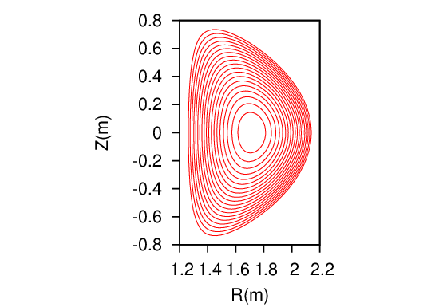
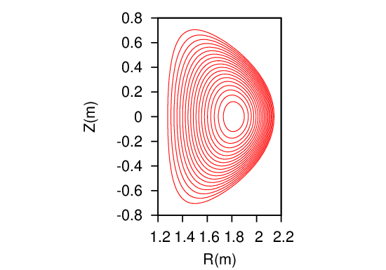

12.8 Low-beta equilibrium vs. high-beta equilibrium
With the pressure increasing, the magnetic axis usually shifts to the low-field-side of the device, as is
shown in Fig. 31.
 
Figure 31: Comparison of two equilibria obtained with P0 = 104 Pasca (left) and P0 = 105 Pasca
(right), respectively, where P0 is the pressure at the magnetic axis. All the other parameters are
the same for the two equilibria, α = 1.0, β = 1.0, Pb = 10−1 Pasca, g0 = 1.0Tm, Iϕ = 500kA,
and the LCFS is given by miller’s formulas (430) and (431) with R0 = 1.7, a = 0.45, κ = 1.7,
and δ = 0.6.